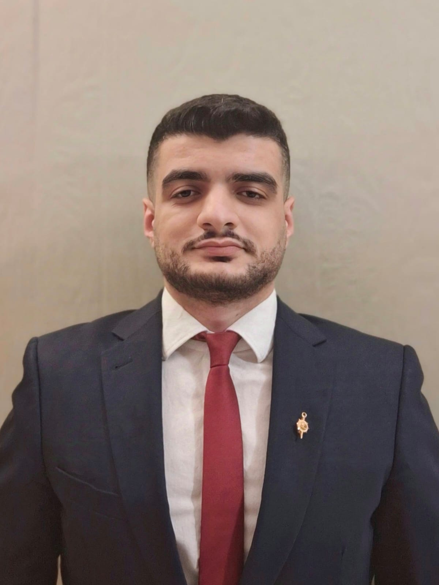

Postdoctoral Fellow, CARISET Lab
[Enter a brief bio here. Example: Works on interdisciplinary research involving AI, cybersecurity, and systems engineering.]
|  |
Dr. Frederic Rizk Assistant Professor, Electrical and Computer Engineering Director, CARISET Lab The University of Texas at Tyler
|
|
|
[Full Name] Postdoctoral Fellow, CARISET Lab [Enter a brief bio here. Example: Works on interdisciplinary research involving AI, cybersecurity, and systems engineering.] |

|
[Full Name] M.S. Student, Computer Science [Write a short bio here. Example: Specializes in machine learning applications for distributed systems and cybersecurity.] |

|
[Full Name] M.S. Student, Computer Science [Write a short bio here. Example: Works on AI-driven optimization techniques and real-time decision-making frameworks.] |

|
[Full Name] Undergraduate Student, Computer Science [Write a short description. Example: Assists with data preparation, front-end development, and AI model evaluation.] |